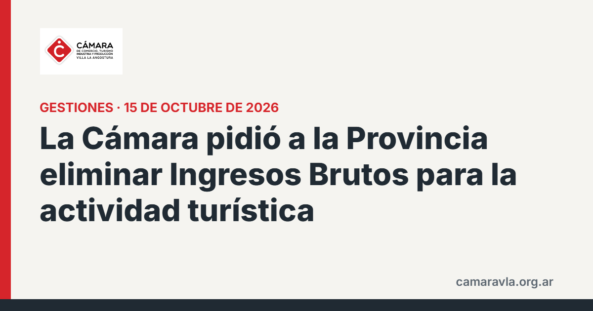

La Cámara pidió a la Provincia eliminar Ingresos Brutos para la actividad turística
En una nota al gobernador Rolando Figueroa, la Cámara pidió que la eliminación anunciada del impuesto alcance también a las empresas que ya sostienen empleo, y una alícuota cero para el turismo de Villa La Angostura y la Región de los Lagos del Sur.

La Provincia anunció el 7 de octubre que eliminará Ingresos Brutos desde 2028 para quienes incorporen trabajadores neuquinos. La Cámara respaldó la medida y planteó dos ampliaciones: que no se castigue a quienes ya mantienen sus nóminas, y que la alícuota del 0% que hoy rige para alojamiento y gastronomía en Alto Neuquén y Limay se extienda a los destinos turísticos del sur. Como fundamento citó la ocupación promedio del 33% en el invierno de 2024 y del 27% en septiembre, frente a salarios y costos fijos que se pagan los doce meses. La Comisión Directiva pidió una audiencia con el gobernador y con las áreas de Economía y Rentas.
Fuentes: La Angostura Digital, 15/10/2026 · Diario Andino, 15/10/2026
Compartí esta nota: https://camaravla.org.ar/noticias/2026-10-ingresos-brutos-turismo